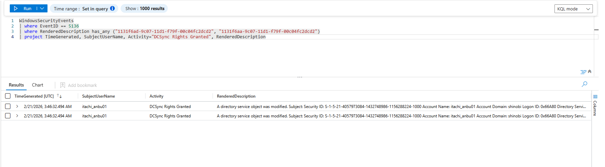
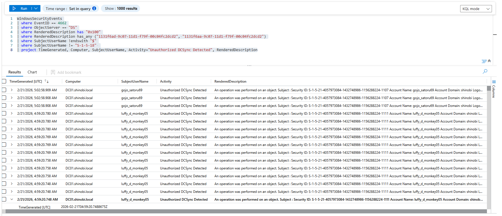
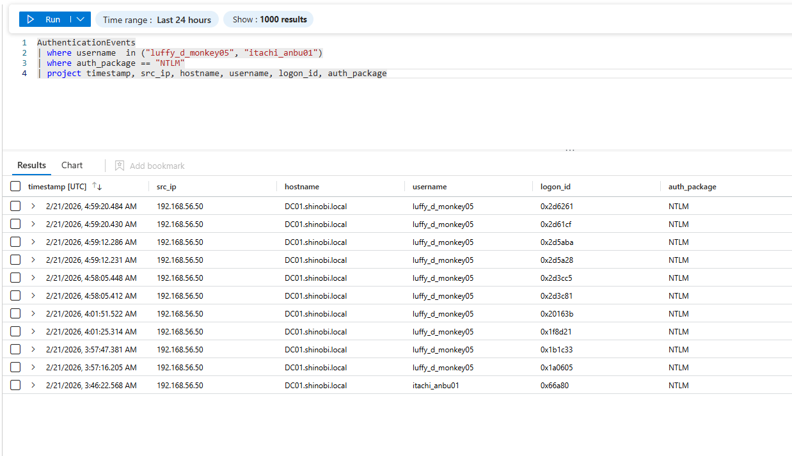

Detection & Telemetry (DCSync Attack)
Attack Vector: The attacker leveraged a user account (luffy_d_monkey05) that had been granted "Replicating Directory Changes" and "Replicating Directory Changes All" privileges. They then used remote tools (impacket-secretsdump, NetExec) to request password hashes for the entire domain via the DRSUAPI protocol.
Key Log Sources:
• Security Event ID 5136: Directory Service Object Modified (Detects the granting of replication rights).
• Security Event ID 4662: Directory Service Object Access (The primary log for detecting DCSync requests).
• AuthenticationEvents (Event ID 4624 and 4625): (Correlates the attacker's source IP with the replication activity).
Objective: Detect the moment an administrative account grants DCSync privileges to a standard user account.
Logic: Modifying the permissions (DACL) on the Domain Root object to include replication GUIDs is a highly sensitive action. We monitor Event ID 5136 specifically for these replication GUIDs on the domain object.
KQL Query:
WindowsSecurityEvents
| where EventID == 5136
| where RenderedDescription has_any ("1131f6ad-9c07-11d1-f79f-00c04fc2dcd2", "1131f6aa-9c07-11d1-f79f-00c04fc2dcd2")
| project TimeGenerated, SubjectUserName, Activity="DCSync Rights Granted", RenderedDescription
Analysis:
itachi_anbu01.
Objective: Detect the actual execution of the DCSync attack where the Domain Controller replicates secret data to an unauthorized user account.
Logic: We monitor Event ID 4662 for an Access Mask of 0x100 (Control Access) against the Domain object. The alert triggers when this request is initiated by a user account rather than a legitimate Domain Controller machine account (which would end in $).
KQL Query:
WindowsSecurityEvents
| where EventID == 4662
| where ObjectServer == "DS"
| where RenderedDescription has "0x100"
| where RenderedDescription has_any ("1131f6ad-9c07-11d1-f79f-00c04fc2dcd2", "1131f6aa-9c07-11d1-f79f-00c04fc2dcd2")
| where SubjectUserName !endswith "$"
| where SubjectUserName != "S-1-5-18"
| project TimeGenerated, Computer, SubjectUserName, Activity="Unauthorized DCSync Detected", RenderedDescription
Analysis:
luffy_d_monkey05 and gojo_satoru69.
Objective: Identify the source IP address from which the DCSync replication requests originated. Logic: We correlate the user accounts flagged in the replication events with recent NTLM authentication events.
KQL Query:
AuthenticationEvents
| where username in ("luffy_d_monkey05", "itachi_anbu01")
| where auth_package == "NTLM"
| project timestamp, src_ip, hostname, username, logon_id, auth_package
Analysis:
192.168.56.50.DC01.shinobi.local.luffy_d_monkey05 authenticated via NTLM from the attacker's machine to establish the replication session.
luffy_d_monkey05) requests the hash for this specific honeypot user via DCSync, trigger an immediate P1 incident.{kind=link}
{kind=link}
{kind=link}